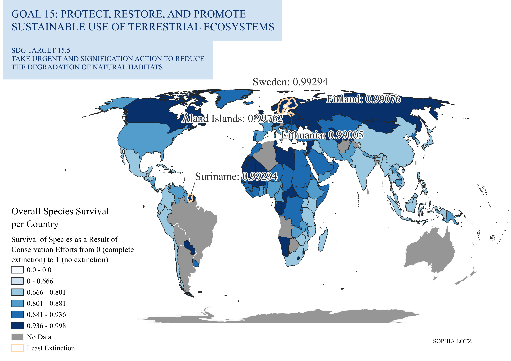

Static Choropleth Map
The red list index (UN definition): “The aggregate extinction risk for species within the country or region relative to its potential contribution to global species extinction risk (within the taxonomic groups included). It is measured on a scale of 0 to 1, where 1 is the maximum contribution that the country or region can make to global species survival, equating to all species being classified as Least Concern on the IUCN Red List, and 0 is the minimum contribution that the country or region can make to global species survival, equating to all species in a country or region having gone extinct.”
Link to metadata: https://unstats.un.org/sdgs/metadata/files/Metadata-15-05-01.pdf
This map includes open source data from 2022 regarding the UN SDG goal 15.5.1. The countries with the highest species survival are highlighted. This SDG goal is scored from 0 to 1. It is important to note the large gap in data, as many countries with vital global ecosystems neglected to submit their data.
This was the first assignment of the course and was made using QGIS. Visual Hierarchy was an important aspect, so the colors for this assignment are meant to highlight the top 5 performing countries. The biggest issue with using a choropleth map to highlight country performance is how many smaller countries are easily overlooked, despite potentially performing better than their larger counterparts.
Leaflet Interactive Map
Used the same data as the previous map, but converted the values to a percentage to improve user experience. Again, the color choices are meant to provide the most contrast between countries. This map combines various programming languages, including CSS, HTML, and JavaScript. It is a vector map, as it is represented by geometry and polygons rather than the pixels that you would see in a raster map.